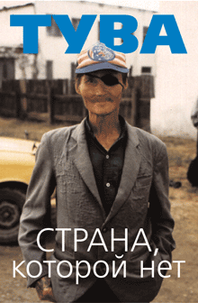

КНИГА
"ТУВА - СТРАНА,
КОТОРОЙ НЕТ"
Кто поехал в Туву?
В Туву нас отправилось человек двадцать. Были среди нас музыканты, художники,
фотографы и просто веселые ребята. Ключевыми персонажами оказались матерые Ваня с
Бабсом, которые ехали в Туву уже второй раз за это лето. Их там, правда, не очень
ласково принимали. Точнее, очень даже принимали. Черт, запутался. Короче, в
первый раз до полусмерти отчебуречили, а в этот конкретно приняли за то, что
очень уж они любят читать зеленые книжки.
Зачем мы туда поехали?
Вот это вопрос. Формально мы поехали участвовать в фестивале горлового пения и
рэггей-музыки (такой идиотический получился набор) "Устуу-Хурээ", а практически
каждый поехал, чтобы решить какие-то свои вопросы. Кто-то хотел пообщаться с
шаманами, кто-то с ламами, а кто-то очень любит читать. Но таких, кто вообще
ничего не хотел и попал туда по ошибке, среди нас не было.
Как мы туда добирались?
Добирались мы с большим трудом, но всем веселым гуртом, поездом до Ачинска.
Билеты купили в купейный вагон, который почему-то оказался спальным. То есть
вместо четырех полок в купе было три, места не совпадали с теми, что были указаны
в билетах, и в такой сутолоке, суете и тесноте, не в обиде и беде, а в очень
веселом расположении духа, абсолютно одуревшие, мы прибыли в Ачинск. В Ачинске,
паче чаяния, нас никто не встретил. Тогда мы отправились в Абакан, где нас тоже
никто не встретил. Тогда назло всем мы вскочили на лошадей и, как ветер,
прискакали в Кызыл.
Что мы там делали?
Если я скажу, что мы делали все то, что могут делать веселые, молодые и приятные
во всех отношениях парни и девчонки, это будет неправдой. Если я скажу, что мы
пили араку, чай с бараньим жиром, молоком и солью, купались в ледяном Енисее и
лазили по горам, то это тоже не будет правдой. Если я скажу, что мы ездили на
службу в разрушенный буддийский монастырь "хурээ", смотрели борьбу в стиле орла
"хуреш" и участвовали в скачках, это будет совсем неправдой. Поэтому лучше я вам
ничего не скажу.
СОДЕРЖАНИЕ КНИГИ
ЭПОС
Ильяc Фалько "Тува - страна, которой нет"
РЕПОРТАЖ
Иван Толкайкороля "Тюрьма Чаа-холь"
ГАЛЛЮЦИНОЗ
Володя Матадор "Тара"
ЭРОС
Даша Круче "Уши и языки"
ФОТОРАЗДЕЛ
|